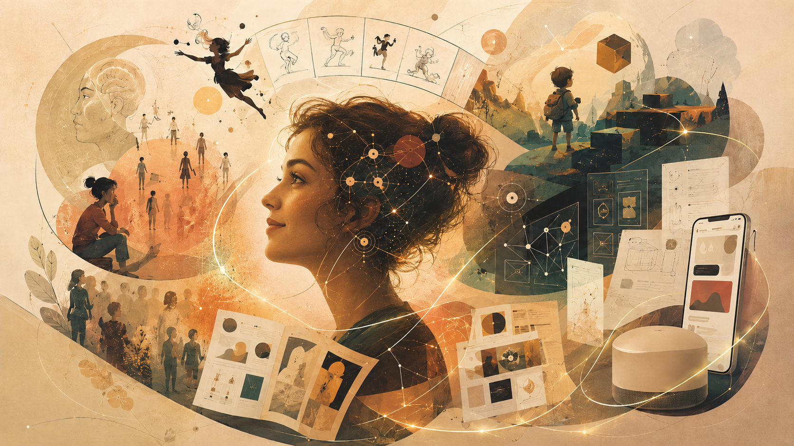

I didn't start with product design.
I arrived here through craft.
My career started with curiosity about human behavior. As a psychology student, I learned to observe how people think, respond, decide, and make sense of the world around them.
From there, I moved into animation and game design, then visual design, branding, print media, motion, and eventually product design. Every phase added a different lens to how I solve problems today.
I love that my path was not linear. It taught me to keep learning, stay open to new mediums, and look at design from many angles - behavior, motion, storytelling, systems, and product thinking.
That journey changed my mindset. I no longer see design as only screens or visuals; I see it as a way to shape understanding, confidence, and better decisions.
